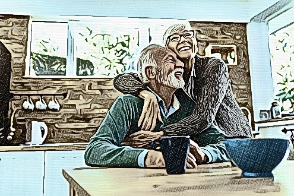

I used to believe that hard work and luck, were the key factors behind happiness and success…
…Until I watched this fascinating video by Mark Williams and it opened my eyes.
It turns out that it has little to do with luck at all. And one of the biggest keys, is to harness the power of “Personal Magnetism”
Here is how to activate Personal Magnetism...


7 Keys to Feeling Happier in Life
Happiness does not come from reaching the top of the mountain, or by reaching our goals…
...It comes from LOVING the journey and the process that gets us there.
It doesn’t come from realising we no longer need to change and grow…
...It comes from realising we CAN change and grow, and that is something to be EXCITED about.
Studies have shown that happier people become more productive and achieve more of their goals in life…
...Yet unfortunately, so many people believe in the myth that happiness is caused the other way around (that they must ‘achieve success’ in order to feel happy).
“I’ll be happy when …” is a dangerous statement to make. And it sets people up to go months, or years, without allowing themselves to feel happy.
And even when reaching the top of a mountain, the human condition is to feel elated for a moment…
...Only to then see that as the new normal, and now need to achieve the next goal to feel happy.
There are 4 main chemicals in the brain that influence our feelings of happiness…
- Dopamine
- Oxytocin
- Serotonin
- Endorphin
And each plays a different role in how we experience happiness.
Dopamine is what we feel when we enjoy striving for a goal.
Oxytocin is what we feel when we are being social.
Serotonin is what we feel when we are in a good mood. Interestingly up to 90% of Serotonin is produced in the gut, and is heavily influenced by what we feed ourselves.
Endorphins are associated with the fight or flight response, and are what helps push you through challenging periods in life, or with fighting towards difficult goals.
Here are 7 keys to feeling happier in life...
By feeling happier on a daily basis, you’ll in turn find that your productivity will improve AND you’ll achieve more of what you want in your life...
1. Cultivate a Growth-Oriented Mindset
According to Carol Dweck, Professor of Psychology at Stanford University, there are two main mindsets we can navigate through life with … Growth and Fixed.
People with a fixed mindset believe that their abilities and intelligence levels are static. So they tend to plateau in everything they work towards, as they believe they have reached their predetermined potential.
In reality, they tend to achieve far less than their true potential. And go through life less happy than those with a growth oriented mindset.
Those with a Growth Mindset believe that their abilities and intelligence can improve over time.
That means they can not only get better at learning a particular skill, but their actual ability to learn can improve also.
Those with a growth mindset tend to feel happier, as they see their potential for success as being far greater than those with a static mindset.
This belief in their potential leads to a more positive view of the world, and also leads to much more positive long term results in life.
Those with the fixed mindset tend to get more consumed with ‘proving themselves’ while those with the growth mindset, get more consumed with taking action that leads to the outcomes they are looking for.
The growth mindset leads to a powerful passion for learning, and for stretching yourself (even when things aren’t going well).
The growth mindset leads to enjoying obstacles and seeing them and opportunities for learning and self improvement.
2. Develop and Optimists View of the World
In many situations optimists and pessimists are both right … However, in life, optimists tend to be happier and achieve more success.
Optimists also suffer less anxiety, depression and stress than pessimists. Optimists are also more action-oriented than pessimists.
So it’s not just what happens to you that is an important determinant of how happy you are … It’s how you interpret the situations as they happen.
Billy and Sarah both lost their jobs at a magazine publishing company.
Billy took it badly, and while he sent out job applications to 30 companies, he took 3 months before he finally found a replacement job. His new job quickly became highly stressful and he is upset that bad things keep happening to him.
Sarah was upset at losing her job. She had a cry on her husband’s shoulder but woke up the next morning with a new lease on life. She decided that this was going to be an opportunity to make life even better than before.
So she wrote up her new resume, and decided to get picky about the jobs she applied for. She applied for 7 jobs and got an interview with 2 of them.
One of them turned out to be a job that paid higher than what she had previously been on, and was very excited as it involved learning a few things about magazine artwork that she had always wanted to get involved in before.
Sarah is an example of someone with an optimists mindset and Billy is an example of someone with a pessimists mindset. Situations like these happen regularly in people’s lives and optimists tend to navigate them a lot better.
The key is to always look for the silver lining in any situation. Figure out what could make this challenge turn out to be a ‘blessing in disguise’ and make it into a positive.
When good things happen in life, don’t forget to celebrate those little victories. Don’t brush them off as ‘insignificant’.
If you can view your career as a ‘calling’ rather than a ‘means to an end’, you’ll feel more content and succeed more.
If you can focus on the positives in life, and feel genuinely grateful for all the little things that you have, you’ll have a lot of great days going forwards.
3. Enjoy the Journey as much as the Destination
Life is NOT a series of destinations … More time is spent on the journey, than on reaching any goal or dream.
So it’s important to look to gain more satisfaction and pleasure from the work that goes into achieving that success, than the success itself.
In order to do that, you need to enjoy the process that leads to the outcomes you are looking for.
If you want to win a race, you need to find a way to enjoy the training. And to gain satisfaction from that training.
Otherwise too much is hinging on the results of that race and even if you win, that’s a lot of time spent training, where you could have been enjoying it.
If you don’t win, then it’s important you can enjoy looking back at the journey and effort that went in … And say to yourself you did everything you could have done, and that you are happy with yourself for that.
And that’s well worth celebrating.
Happy people tend to realise the value of challenging themselves … Whether or not the success comes at the end is of less significance than how much effort was put in.
If you put more effort in, and enjoy facing great challenges, then it’s inevitable you’ll achieve many great outcomes in life.
And you’ll enjoy more of life in the process.
4. Keep Up Your Social Relationships
“Countless studies have found that social relationships are the best guarantee of heightened well-being and lowered stress, both an antidote for depression and a prescription for high performance.” - Shawn Achor, Author, “The Happiness Advantage”
Harvard University conducted the most extensive study ever on adult development. They tracked the lives of 724 men from 1938, over 75 years.
One of their key findings was that good social relationships are the key factor that matters the most for long-lasting happiness.
“The lesson that came from tens of thousands of pages of that research was that good relationships heek up happier and healthier,” says Dr Robert Waldinger, a psychiatrist and director of the Harvard Study of Adult Development.
What’s more, dozens of other studies have been conducted over the years, that have also shown that people who have satisfying relationships are happier and live longer.
So make sure to always make time to prioritize family and friendships.
Be kind to others also, it’s not just about ‘spending time’ with them, though that is certainly a critical factor.
Make sure to help out others who need it, both with your time, and/or your resources.
“A long line of empirical research, including one study of over 2,000 people, has shown that acts of altruism—giving to friends and strangers alike—decrease stress and strongly contribute to enhanced mental health.” - Shawn Achor, Author, The Happiness Advantage.
These secrets can help anyone influence other people to please them and do what they want.
5. Improve Your Nutrition
One of the 4 main ‘happiness hormones’ is Serotonin. And it is estimated that up to 90% of it is produced in the gut.
That’s why what you eat and drink also plays an important role in your overall feelings of happiness in life.
One small study of people with mild-to-moderate anxiety or depression found that taking probiotics for 6 weeks significantly improved their symptoms…
…While another study found that taking probiotics (galactooligosacharides) for 3 weeks, significantly reduces the amount of cortisol in the body (a stress hormone).
One natural way to build up a healthy gut is to decrease sugar and processed food intake, while increasing intake of natural whole foods.
Fermented foods like Sauerkraut are excellent for your gut.
Vegetables and fruit are also good for your gut and help produce more of those microbes that are responsible for Serotonin production.
6. Chaos Leads To Frustration … Create SYSTEMS That Lead To Success
“I value self discipline … But creating systems that make it next to impossible to misbehave is more reliable than self control.” - Tim Ferris, Author, The 4 Hour Work Week.
Most people live their lives as though many of the situations that happen to them are erratic occurrences.
But really, it’s a series of logical and complete systems, some big, some small, that are playing out over and over again …
… And you have the ability to create, edit and nurture these systems, so that you have the life that you want.
Just merely having that realisation that your entire life can be redesigned to be whatever you want it to be, can give you a lasting feeling of additional happiness and clarity about your future.
What you need to do is pay attention to things that you WANT and things that happen that you DON’T WANT.
Then you need to break them down into the systems that need to be in place to cause (or prevent) them from happening.
This applies to all areas of life: Home, work, health, relationships and goal achievement.
Here’s an example…
John’s wife, Felicity, was feeling overwhelmed with all the housework she was doing at home. They have 3 kids and every day the mess kept piling up, and it was causing her stress.
John decided to make a system to help her.
He made a list of things that the kids had to do when they got home from school each day.
If they completed all their ‘jobs’ then they get to have 1 hour of ‘free play’ time before dinner.
If they didn’t do the ‘jobs’ then they not only missed out on the ‘free play’ time, but they got a bit of a lecture about ‘doing their part’ to help out in the family, and how valuable this is to their mom.
Within 2 weeks, the kids were getting their clothes put in the wash, getting their lunchboxes out and cleaned, their homework was being done on autopilot, and they were cleaning up after themselves if they made any snacks…
...Felicity was elated! This little change in the system by which they lived their lives made a big improvement to their overall happiness.
The kids noticed how their Mom was more peppy too, and they felt great at being more self-sufficient.
It was a win-win all around.
This is an example of how a change in the system by which you live your life can make a big impact on your future.
There are many examples, for instance automatically saving 3% of your income, can lead to more vacations… Or always making sure treats in the house are harder to get to than healthy snacks, can lead to healthier eating… etc, etc.
The key is, look at the systems by which you live your life, and work to improve them.
7. Accept What Is … Chase Damn Hard For What ‘Could Be’
According to a study of 5,000 people, by the University of Hetfordshire, self acceptance is one of the most critical factors that affects our happiness …
...But is often the one we practice the least.
Acceptance has two parts to it…
- Accepting what is, and what has happened to us.
- Accepting ourselves and who we are.
The thing is, the past has already happened to us.
So it’s vitally important to cultivate that habit of accepting what has happened to us. Even if it’s unfair.
It’s important to look for any possible silver linings, to learn those lessons, and to form an exciting plan for the future.
It’s also crucial that we love ourselves as we are, and don’t place limits on ‘I’ll love myself when…’
You are already great. You are already a wonderful human being. Don’t wait till you’ve got that pay rise, or you’ve got that perfect relationship, or you’ve lost that stubborn belly fat, before you love yourself …
… Those are goals you may have, but you’ve got to accept what is, love life as it is right now, love yourself as you are right now … AND chase damn hard for what could be.
It’s time to get excited and happy about life as it is.
Love the challenge, love the journey you are on, and focus on cultivating these 7 habits.
They’ll lead to an overall feeling of more happiness in your life.
Influence is power and can help people succeed. This explains how to get unstoppable influence.